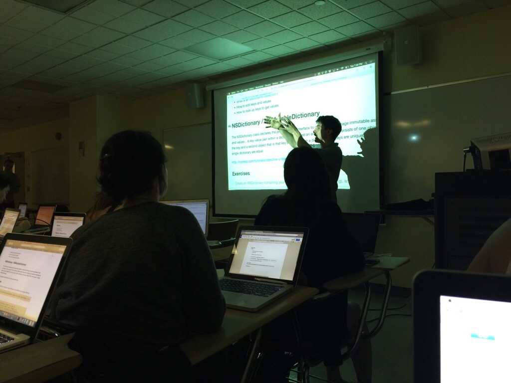
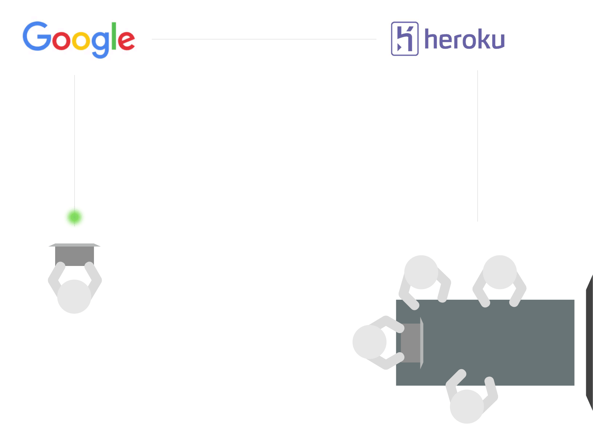

Since the end of May I've been resposible for teaching 32 people what it means to be a programmer and how to find success in the context of iOS. For most of them this is their first experience writing code. In-class time totals 20 hours a week + optional office hours.
My responsibilities in the program include generating curriculum, creating exercises, creating and grading assignments/assessments, and teaching the material.
Curriculum
I built the iOS curriculum with our Braintrust. The idea behind the Braintrust is to engage leading mobile engineers in NYC to not only cross-check our progress, but to build teaching material against the current industry expectations of an entry level mobile developer. Our iOS Braintrust is made up of some outstanding individuals:
You can find most of the curriculum on this website.
One of my primary initiatives at Coaltion for Queens is building out an internal system. For context, most of our C4Q data lives in a massive Google Drive. Within my first few days I was completely overwhelmed, so I made the decision to create an application could pigg-back off of the existing frameworks. Specifically, Google Apps.
I put together a RoR application built on Heroku. Through the use of Google App Script, I was able to use Google as a front end and our own server as a back end.
The application is split into two separate sections: admin, and developers. The admin section allows us to run reports on the data we collect, while the developer section allows us to communicate program progress to the students.
The majority of the application relies on Google App Scripts, of which I was previously unaware. The idea is quite simple: bind code to events and send data via ajax.
Project Eueler is a list of 523 CS problems. As a self-taught programmer, this is a great way for me to learn/practice the CS concepts I was never formally taught. My solutions are in a Swift playground and can be found on GitHub.
Every week I grade 32 assignments. The process is as follows:
After cloning about 3 repos I decided to automate the process.